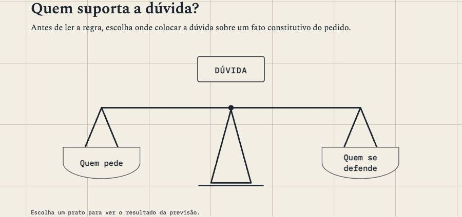
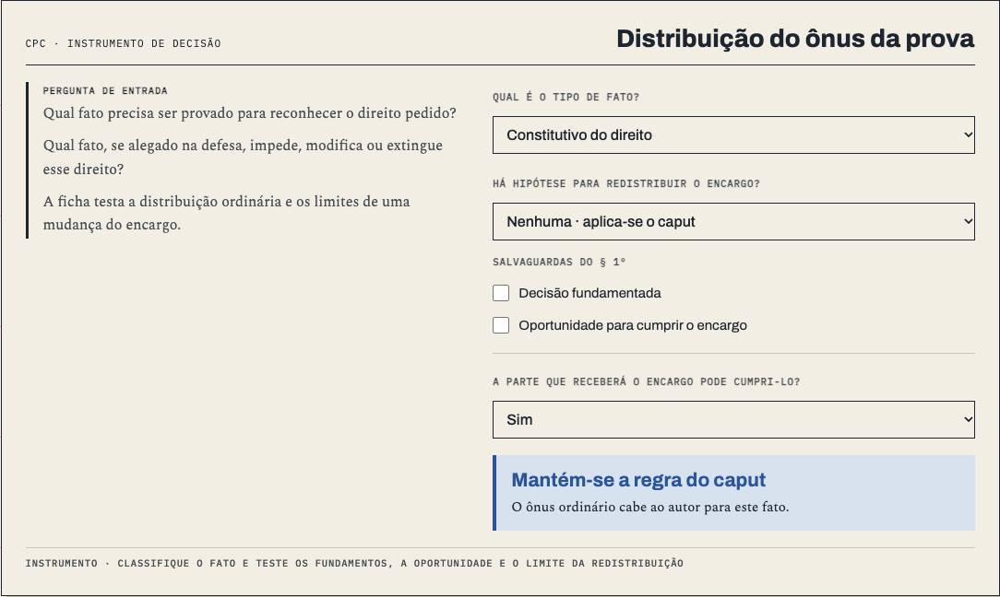
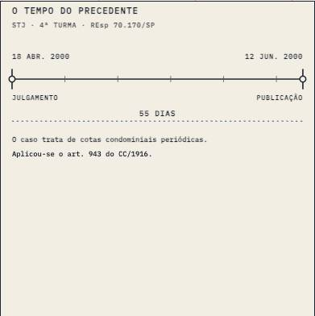
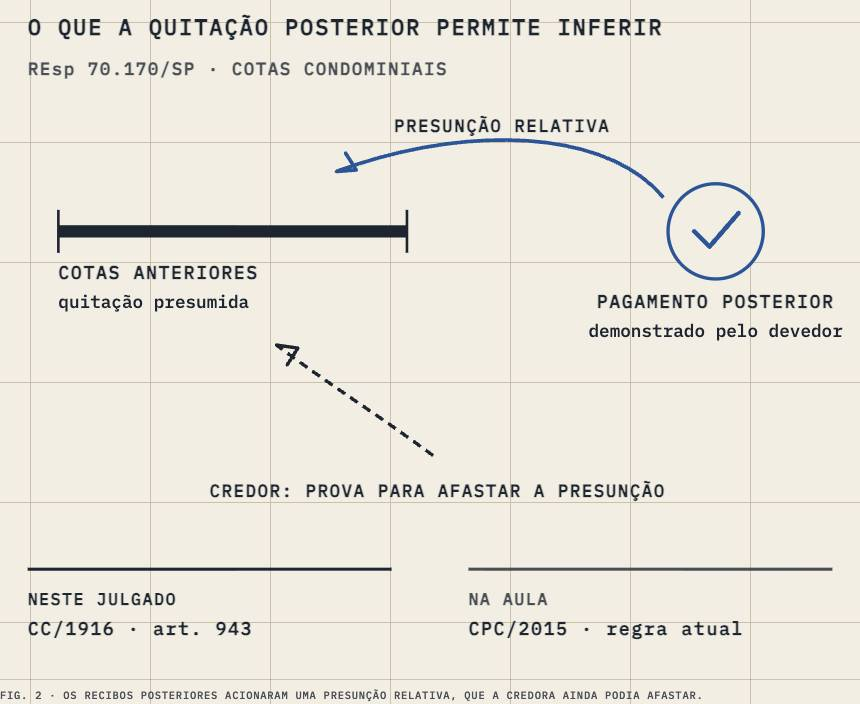

Processo Civil I · aula-17
Ônus da prova
3,563 words, one sitting · 4 chapters · 4 figures, 3 saying what they do · 4 quoted sources · a quiz
built on3.1
on09/10
byCodex
generation3 Yosemite
commits15
how it's built
- 1O tipo de fato define a distribuição ordinária637 w
- 2O encargo orienta a instrução e resolve a dúvida residual700 w
- 3A redistribuição exige fundamento e oportunidade824 w
- 4Do encargo ao julgamento1,086 w
its figures




what it quotes
- 1×STJ · REsp 70.170/SP (2000)
- 1×CPC · Lei 13.105/2015
- 1×Marinoni · Novo Curso de Processo Civil, v. 1 (2017)
- 1×Marinoni · Novo Curso de Processo Civil, v. 2 (2017)
prepared for it · 8 chapters
- primarymarinoni-novo-curso-vol1-2017 · PDF 285–297
- primarymarinoni-novo-curso-vol2 · PDF 252–278
- supportingbarbosa-moreira-temas-serie4-1989 · PDF 155–172
- supportingcpc-lei-13105-capture-2026-09-28 · Art. 357
- supportingcpc-lei-13105-capture-2026-09-28 · Art. 373
- supportingmarinoni-novo-curso-vol2 · PDF 216–223
- supportingmarinoni-novo-curso-vol2 · PDF 224–229
- supportingpeer-note-carolina-leite-p2 · PDF 1–11
the course, as I read it
The house's reference course, rebuilt twice and still not at its own bar.
its checks
negated inference 2.2 / 0.5
gap talk 0.0 / 0.1
contrast tail 0.5 / 0.5
staged reveal 4.3 / 8.0
its life
- 19/10A17 balance: DÚVIDA lands in the pan
- 19/10A17 balance: one beam, pinned at the post
- 18/10Complete INSTRUMENT-1 follow-ups
- 18/10A17 hero: install the whole figure when its marker is used up
- 18/10Apply INSTRUMENT-1 gate fixes
- 18/10Add reader actions to Processo lesson figures
- 16/10Add Aula 17 release 4.2 structure
- 15/10The turn: a folded corner and ⌘⇧K turn every page to its backstage and back
next (my note of 14/10: keep · deslop)